Kitchen
Bright and highly functional family kitchen with great storage, durable finishes, and strong lighting. Family loves to cook, and we typically have about 3 people in the kitchen at the same time, so it needs to feel comfortable for multiple people working together.
Needs
The gray kids-room wall beside the refrigerator retains centerline z = 24.7367 ft and original end x = 29. Do not move that return or add a floor pocket there. The kitchen wall shared with prep and mudroom is at x = 37.5; its cabinetry and adjoining floor boundaries must coordinate without widening the oven bay. The kids-room doorway remains fixed. Structural, product and circulation review is required.
Kitchen sink facing the windows.
Prep kitchen (countertop and sink) + pantry combined.
Plenty of outlets for small appliances.
Canned lights with diffusing cover.
Undercabinet lighting.
Durable, easy-to-clean surfaces and finishes.
Lots of deep drawers instead of lower cabinets with doors.
Pull-out cabinet for trash + recycling immediately to the left of the sink.
Dishwasher immediately to the right of the sink.
Compact dish rack on the counter right of the main sink, above the dishwasher: stainless-look wire frame and a neutral removable 16 × 14-inch catch pan with raised edges. No drain spout; remove the pan and empty water manually. Keep the faucet and soap dispenser clear; confirm actual dimensions, pan removal, and cleaning access before purchase.
Vertical tray storage for cutting boards and baking sheets.
Soft-close doors and drawers.
Cabinets to the ceiling.
Engineered wood flooring to match the rest of the main level.
Approximately 36-inch farmhouse/apron-front sink with unequal double basins: prefer 30/70 or similar, never 50/50. Use a smaller left bowl and larger right bowl in the concept, with a low divider.
Under-sink storage solution for sponges, cleaning supplies, etc.
Island seating: exactly four 18-inch-wide dark-frame stools with brown seats and wood backs, in one hall-side row with no end stools. Lengthen the island to 8 feet and use 24-inch stool centers instead of 20 inches. This gives 6-inch gaps between nominal seats; verify the selected stools and occupied circulation.
Built-in soap dispenser beside the main faucet. The preview shows one pump; retain the original provision for a second hand/dish-soap dispenser when coordinating the final countertop hole layout. Do not pre-drill before selecting the sink and fixtures.
Deep pull-out drawer for plastic containers.
Deep pull-out drawers for plates and bowls.
36-inch induction cooktop.
Fisher & Paykel 30-inch refrigerator and 30-inch freezer columns separated by the oven/storage tower on the bottom wall: RS3084FLJK1 freezer toward the mudroom wall, RS3084SRHK1 fridge toward the stairs. Handles face the tower. The stainless-panel finish remains a concept. Confirm separate-column installation, handing, panels, ventilation, hinge-side filler, and full door/drawer clearances before ordering.
Microwave and/or air fryer.
Separate hot and cold drinking/filtered-water dispenser beside the main sink faucet, not cold-only. Coordinate the filter, hot-water tank, power, plumbing, and under-sink storage.
Will need a large electrical panel capacity to accommodate appliances running.
Second sink somewhere (like prep kitchen)
Water leak sensor.
Wants
Windows in the prep kitchen
Paper towel holder inside a cabinet
Might have to prep range for gas in case of resale.
Prefer warm wood style kitchen
Drawer with power outlets for phones, tablets, laptops.
Instant drinkable hot water dispenser.
Oversized dishwasher.
Storage on both sides of the island.
Confirmed layout
Kitchen lighting and Night mode
Start with four warm, dimmable 4-inch regressed/baffled recessed lights, not a dense ceiling grid. Place one for the sink zone, two along the cooking-side work aisle and one at the refrigeration approach. Retain the two island pendants and add actual downward task light beneath them. Two concealed, diffused strips beneath the hood-side upper cabinets wash the counter; the hood also has a working task beam. No sink-wall under-cabinet strip is invented where windows replace upper cabinets.
In the viewer, Night lighting switches these sources on and automatically checks Island lights; Day switches the practical sources off and restores the previous daytime pendant-visibility choice. The current Night default starts with island pendants visible and on. Front inspection views hide foreground pendants/ceiling hardware for clarity; task illumination remains and normal views restore the hardware. No extra controls or status panels are added.
Use a warm 3000 K, high-CRI (90+) design direction, small apertures, regressed light sources, diffusers and separate dimming for ambient, pendants and task layers. Four cans are a starting study, not a calculated minimum or selected product. This follows Cooper Lighting's layered-lighting guidance; RAB's baffled 4-inch retrofit range illustrates the fixture type, not a purchase selection. Final output/beam spacing must use selected IES photometry, cabinet/pendant dimensions and dimmer/driver compatibility. Check reflected glare on quartz and glass from seated/standing eye positions rather than adding more bright cans.
The adjacent family message board gains one shielded 45-inch picture-light concept above the frame, with soft downward beams in Night mode. The black glass finish is unchanged; aim/dim against a physical mock-up to avoid reflected hotspots. Verify fixing, electrical feed, headroom and product clearances with the electrician. All preview brightness is illustrative, not a lux/foot-candle or glare certification.
Doorless passages: 36-inch finished clear width
Both circled openings are now 36 inches finished clear and 96 inches high, with no doors, tracks or thresholds. At wall x = 37.5 ft, kitchen-to-prep spans z = 9.725-12.725 and kitchen-to-mudroom spans z = 21.175-24.175. The shared floor plan and furnished model use the same opening schedule. Casings stay outside the clear rectangle; the builder must derive rough openings from selected jamb/finish thickness and site tolerances, not assume a 36-inch rough opening remains 36 inches clear.
Keep the outer jambs fixed beside sink/prep cabinetry and refrigeration. Each inner jamb moves 6 inches toward cooking, preserving the cooktop/hood centerline. The counter shortens 106.15 to 94.15 inches. Retain the centered 36-inch cooktop base and both 6-inch pull-outs; side drawer bases and hood-side upper stacks reduce from 27 to 21 inches each. End fillers remain 2.075 inches each. Counter depth, height, sink, island, seating, appliances and 48-inch hood remain unchanged. Shift the mudroom basket tower 1 1/2 inches north, retaining ten baskets, and shorten its connecting return to clear the projecting casing cap. Verify headers/structure, services and occupied circulation before construction.
Common-size cabinets on the cooking wall
Use common nominal base modules, from prep toward mudroom: 6-inch spice pull-out + 21-inch drawer base + 36-inch cooktop base + 21-inch drawer base + 6-inch board/tray pull-out. The boxes total 90 inches within the revised 94.15-inch run. Equal 2.075-inch end fillers meet the doorway casings; they are fitted trim, not pretend storage. Do not force another cabinet into those small allowances. All boxes are nominally 24 inches deep and 34 1/2 inches high, with a 4-inch recessed toe.
Full-overlay front reveals target 1/8 inch. Drawer stacks have one 5 1/2-inch-high utensil front above two 12 1/4-inch-high cookware fronts; boxes and contents move at their revised heights. Side fronts are 20 7/8 inches wide and center fronts 35 7/8 inches wide, not nominal box dimensions. Each narrower side cookware drawer holds one realistic 10.56-inch pan/pot rather than a shrunken pair. Narrow pull-outs retain full-height fronts, 21-inch travel and furnished inserts: nine spice jars at the prep end, one board and one tray at the mudroom end. The existing larger sink-wall organizer remains.
The hood-side uppers use 21-inch-wide, 12-inch-deep single-door boxes: 36-inch-high lower cabinets with 15-inch-high cabinets above. A 2.4-inch combined scribe/cornice closes to the ceiling. Retain the 48-inch hood, gold hardware, task lights and oak Shaker appearance. Four adjustable shelves plus the upper-tier floors support the retained glasses and mugs; cup spacing follows the narrower boxes.
Cabinet backs meet finished wall x = 37.325 ft, base fronts x = 35.325, and the 25 1/2-inch counter spans x = 35.2-37.325. Counter depth and 36.6-inch finished height stay fixed while the wider passages shorten its length by 12 inches. Cooktop center remains (36.325, 16.95), with unchanged size. Sink, island, seating and refrigeration do not move. Inspect with Cooktop wall; the foreground tree temporarily hides in this view and returns elsewhere.
Supplier checks: these are common nominal modules, not a verified order for one frameless oak cabinet line. A complete 6-inch spice-base example is different from a bare filler pull-out accessory; no product or finish is selected. Verify a compatible board insert, matching 21/36-inch modules and upper stacks, exact overlays, end scribes, loaded slides, cooktop cutout/underside/ventilation and whether a top drawer is permitted. The sink run, island and oven tower remain separate concept allowances, not newly standardized products.
Browser bounds show 57.6 inches between cooking and island counter edges, excluding projecting handles and occupied use. Both narrow fronts open/close through the model's picker and carry their contents 21 inches. Sampled travel of the eleven cooking-base fronts clears cabinet panels with the modeled goods. These checks do not establish safe simultaneous opening, loaded capacity or manufacturer-approved cooktop clearance.
Furnished storage study - October 25
Owner's dish allocation: provide 10 each of small, medium and large plates, and 10 each of small, medium and large bowls, plus an assumed 10 drinking cups and 10 mugs. Planning diameters are 7 / 9 / 10 1/2 inches for plates and 4 1/2 / 6 / 8 inches for bowls. Bowls use tapered nesting profiles; the two five-bowl stacks in each bottom drawer are about 6.2 inches high. These are representative sizes, not measurements of the owner's dishes. Confirm actual nesting pitch, handled-cup envelopes, drawer/shelf load ratings and reach before purchasing inserts or cabinetry.
Open the cabinet fronts in the kitchen model to inspect representative household contents. The sink-wall storage view temporarily hides the island, pendants and foreground cooking run for a closer look; other views restore them without changing cabinet poses. These are planning stand-ins, not a measured inventory of the owner's possessions. Every ordinary kitchen, island and prep-extension drawer is furnished; contents move with the drawer rather than staying behind in the cabinet.
| Storage zone | Modeled contents |
|---|---|
| Sink-wall drawers | Top: divided forks, spoons and table knives. Middle: stacked bowls. Bottom: reusable food containers with lids. |
| Cooking drawer banks | Top: wooden spoons, spatulas and serving spoons. Middle: frying pans with handles. Bottom: saucepans. The large stockpot and separate lids stay below the steam oven, not in shallow drawers. |
| Island drawers | Three banks, small / medium / large from sink toward refrigeration. Each middle drawer holds 10 plates in two stacks of five; each bottom drawer holds 10 matching-size nested bowls in two stacks of five. Top drawers retain cutlery/serving tools. Totals: 30 plates and 30 bowls. |
| Cooking wall uppers | 10 drinking cups and 10 handled mugs: five cups on each lower adjustable shelf and five mugs on each next shelf, arranged in two rows. Upper-tier floors stay spare. Verify safe reach and actual shelf loading. |
| Prep drawers and cupboards | Organized utensils, bowls and lidded food containers; larger mixing bowls and serving platters on added cupboard shelves. |
| Trash pull-out left of sink | Separate gray trash and blue recycling bins, arranged front-to-back. Each conceptual removable bin is 13.2 W × 8.4 D × 19.8 H inches. A lowered carrier supports both at 6.24 inches above the floor. The corrected 21-inch extension exposes the rear bin. |
| Far-right sink-wall pull-out | Existing vertical boards, baking sheets, muffin tin and tray remain. |
Other kitchen drawer banks retain their fixed oak upper closures. The newly standardized cooking bases instead use coordinated full-height drawer stacks and 1/8-inch reveals, without broad strips masking the old size mismatches.
Waste retrieval is not a passing route: with the waste pull-out fully extended, its handle leaves only about 21.4 inches to the island counter edge. The rear bin clears the cabinet front by about 2.7 inches for access. Close the pull-out before anyone passes; actual bin removal, lid options and occupied retrieval still need verification. These are measured model gaps, not code or accessibility approval.
Still needed before fabrication: measure actual plates, handled cookware and utensils; choose bin capacities/liners and slides; verify loaded drawer and shelf ratings, cooktop underside/service space, and appliance/door conflicts. The main under-sink space remains reserved for drains/disposal and the hot-water/filter system, not falsely filled with dishes. Select compatible plumbing, tank, filter, power and maintenance access before assigning organizers there. Keep cleaning supplies in prep's separate cleaning bay. Test retrieval with a person present; do not treat several simultaneously open drawers as a passing route. High cupboards retain spare capacity rather than implying safe everyday reach.
Tray-divider pull-out: far-right base cabinet on the sink wall, immediately right of the dishwasher when facing the windows. Replace that bay's three drawers with one full-height Shaker front and a door-mounted wooden organizer for cutting boards, baking sheets, muffin tins and serving trays, matching the owner's reference photo. Retain the 21.6-inch-wide, 24-inch-deep cabinet footprint and existing counter. The kitchen model includes five upright slots and stored boards/trays; click the front to pull it out 21 inches, or click again to close. It starts closed. Match the kitchen's light natural-stained white oak and satin-gold bar pull, not the photo's painted finish. Sink, trash/recycling, dishwasher, cooking appliances, island seating and passages remain unchanged. Divider spacing, slides and stored items are conceptual: verify actual item fit, usable interior dimensions, slide load rating, handle projections and full-extension retrieval with the aisle occupied before fabrication. This is not product or operating-clearance approval.

Dining-side wall alignment: move only the patio-side dining wall 4 1/2 inches east, to centerline x = 26.875 ft. Its dining face at x = 26.7 ft now lines up with the left end of the sink base cabinets and counter. Keep normal projecting baseboard trim. Kitchen cabinets, sink, windows, sconces and passages stay fixed, and the backyard dining wall stays at z = -0.1 ft. Coordinate the wall junction, flooring and exterior; verify structure and actual finished trim on site.
The long kitchen wall shared with prep and mudroom remains at x = 37.5 ft. Both doorless passages now have 36 × 96-inch finished clear openings, with outer jambs fixed and inner jambs moved toward the shortened cooking run. Main kitchen is approximately 11 ft × 19 ft 11 in; prep is 18 ft wide and at most 8 ft deep. Exterior window wall stays z = 7 ft; island and four stools stay fixed. Refrigeration and the 31 1/2-inch oven tower remain unchanged. Coordinate finishes, trim and built-ins with the new openings; product fit, services and structure require builder review.
Sink candidate: Kohler Whitehaven K-6427-0, white enameled cast iron with a farmhouse apron and low Smart Divide. The manufacturer specification sheet hosted by Willis lists 10 5/16-inch left and 18 13/16-inch right bowl widths, both 18 1/16 inches front-to-back and 9 inches deep: approximately 35/65 by bowl width, not a claimed exact 30/70. Overall size is 35 11/16 × 21 9/16 × 9 5/8 inches, with a 36-inch minimum apron-sink cabinet. The preview uses this unequal proportion in a simplified nominal 36-inch envelope, not manufacturer CAD. A separate dual-lever hot/cold dispenser sits left of the main faucet and a soap pump right, on a rear quartz mounting deck. The sink has no faucet holes; verify the current sink template, cabinet support, countertop drilling, fixture spacing/reach, window operation, drains/disposal, anti-scald controls, tank/filter/power, and soap-bottle access before fabrication. No dispenser model is selected.
The widened passages supersede the earlier extra-foot cooking-run extension: the counter is now 94.15 inches long and meets both doorway side casings. Keep the 36-inch cooktop and 48-inch hood at z = 16.95 ft. Hood margins to the two clear openings are equal at 26.7 inches. Refrigeration remains fixed.
Use the 3D concept's Cooktop wall view for an orthographic symmetry check without perspective foreshortening. Select it again after orbiting to restore the straight-on alignment. The hood, cooktop, base drawers, and backsplash share a centerline. This view temporarily hides the island, pendants, and countertop accessories. Other views restore perspective and furnishings; surrounding doorways are unchanged.
Follow the October 19 kitchen reference with a warm off-white plaster-look hood directly adjoining wall cabinets on both sides. Keep the hood 48 inches wide throughout; taper only its depth, from 24 inches at the bottom to 13 inches below the ceiling cornice, so there are no open wedges beside the cabinets. Use a plain plaster lower edge instead of the walnut band, a concealed extraction insert, and a cornice aligned with the cabinet tops at the 9-foot ceiling. Retain the underside approximately 38 inches above the cooktop. The 46-inch insert remains an allowance, not a verified fit; confirm liner dimensions, combustible-cabinet restrictions, heat clearances, ducting, mounting, and service access with the manufacturer.
The current common-size cooking schedule supersedes earlier custom upper/front sizes and the initial 27-inch module study. Retain 54.6-inch upper bottoms, leaving 18 inches above the counter, and direct hood adjacency. Outer upper edges stop 2.075 inches inside each counter end, aligned with the 90-inch base-module span. No bridge crosses the hood. The 21-inch bases use one cup pull per drawer; the 36-inch center uses paired cup pulls. Keep task lights, quartz finish and island; passages follow the new 36-inch clear schedule.
Finish every main-kitchen wall face in warm ivory quartz from floor to the 9-foot ceiling: the full sink/window wall, the cooking wall around both passages, and the refrigeration wall. Retain window and doorway openings, the continuous veined quartz sill with slim white window edging and no apron, three flower pots, cabinetry, and the plaster-look hood. Remove kitchen-side baseboards so quartz meets the floor; prep-kitchen, mudroom, and other opposite wall faces stay unchanged. The model represents the finish on existing wall faces without added slab thickness. Confirm final slab thickness, seams, substrate, support, flexible sealed joints, window drainage, and the quartz manufacturer's cooktop heat restrictions. Retain the hood task light and countertop accessories.
October 27 owner/builder decision: remove all four recessed under-stair bays, casework, shelves and books. Replace their recess zone with a continuous painted enclosure meeting the current flight/landing soffits and flat base trim; no new doors or storage. Keep full-height refrigeration framing, existing kitchen wall, stair dimensions, landing, guards/handrails, basement access/enclosure and restored fireplace built-ins unchanged. This supersedes earlier keep-bookcase notes. Framing, structural support, underside protection, fire separation and headroom require professional review.
Join the kitchen windows like the prep bank: retain the 54 × 42-inch fixed center pane over the sink and two 18 × 42-inch side casements, but move each side inward 9 inches. Centers are now x = 29 / 32 / 35 ft. The three frames meet edge-to-edge within one 90-inch-wide wall opening, x = 28.25-35.75 ft, without the former 9-inch wall piers. Keep the 53-inch sill and 95-inch head. Use one slim 1-inch white outer surround with a single continuous head and only two outer side boards; no separate interior casing at the joined frames, projecting cap, broad header or apron. Retain the existing white frames, black exteriors, oak kitchen and window sizes. This is a conceptual mulled assembly, not a verified catalog combination or approval to remove structural piers. Confirm the continuous header, factory mull system, actual assembled dimensions, flashing and sealed returns with the builder/dealer.
Retain satin-gold/opal end sconces 75.6 inches above the floor, recentered between finished side-wall faces and the narrower bank's outer trim at x = 27.415625 / 36.584375 ft. All three sill pots remain; side pots shift toward the outer ends to clear the casement crank housings. See the window schedule. Verify electrical-box fit, moisture suitability, reach and actual sash/crank operation.
The continuous smoky blue-gray quartz sill keeps pale veining, a satin finish, rounded edges, 3/4-inch thickness and 3 1/2-inch depth. Its width is now 93 1/4 inches, with 1/2-inch returns beyond the outer trim. No white apron remains. Three pots and saucers fit the shorter sill; plumbing, counters, room boundaries and prep windows stay unchanged. Verify samples, sill support/seams, sealed wet-area joints, drainage and sash operation before fabrication.
Click cabinet doors, drawers or their attached handles in the 3D kitchen to open or close them, including island, cooking, sink, upper and prep storage. Doors swing outward 90 degrees and ordinary drawers slide 18 inches with wooden boxes; the tray organizer retains its 21-inch extension. All start closed; view changes preserve the pose and reload resets it. These are conceptual display operations, not verified occupied-aisle clearances or selected hardware. Close fronts for circulation and check actual slides, hinges, plumbing and appliance conflicts before fabrication.
Keep the two 30-inch refrigeration columns separated on the bottom wall. Facing the wall from the kitchen: wall/filler → freezer → oven/storage tower → fridge → painted stair enclosure. Handles face the central tower. Preserve the separate 2.85-inch recessed wall filler, appliance framing, island, doorways, Shaker uppers and gold pulls. The cornice ends at the fridge framing; no narrow end pull-out or matching upper remains.
The existing central oven/storage tower stays 31 1/2 inches wide, with 30 inches clear between 3/4-inch sides; this retained study bay is not a standard vendor cabinet selection. The complete bank follows the shared kitchen wall without widening this bay: fridge center x = 30.5, tower x = 33.125 and freezer x = 35.75, all at the original depth. The gray kids-room wall stays fixed. Lower the generic 30 × 24 × 24-inch oven allowance to a 30-inch bottom height. Retain the separate freezer filler, framing and upper storage. At product selection, coordinate a standard vendor oven cabinet, fillers and actual cutout without moving the fixed openings. Verify supports, ventilation, services, landing space, reach and full fridge hinge/drawer access at the close side return. See steam-oven options; no model is selected.
Keep standard white casing exposed on both faces of the widened kitchen openings, without the earlier trim build-out. Preserve the outer jambs beside prep cabinetry and the freezer; widen only toward the cooking run. Retain a small trim-to-refrigeration clearance rather than burying casing behind cabinetry. Appliance swings still require verification.
The former landing counter, drawer bank, display shelf, and niche backsplash remain removed; the space between the refrigeration columns now holds the oven/storage tower, not a counter niche. Keep the matching quartz on the other kitchen counter walls and the stair-side enclosure painted and closed. The 3D concept includes a straight-on Fridge wall view that temporarily hides the island, pendant lights, and foreground cooktop hood for an unobstructed view.
The mudroom passage is now z = 21.175-24.175 ft and the prep passage z = 9.725-12.725 ft: both 36 inches finished clear, 8 feet high and doorless. Outer jambs stay fixed and the openings remain symmetric about z = 16.95. The coat cupboard, garage entry and refrigeration stay fixed; the basket tower shifts north to clear the new inner casing. Verify finished widths, trim, structure, occupied circulation and freezer operation.
Lengthen the simple waterfall island from 7 to 8 ft while retaining its 3 ft 6 in width, 2-foot living-room shift, oak storage, gold pulls, and quartz finish. Recenter it at (28.65, 16.95) with the cooking run; this extends the prep-side end by 12 inches while keeping the refrigeration-side end at z = 20.95. Extend the base, three drawer banks, toe-kick, slab, and waterfall ends together; pendants follow the new center. Four 18-inch stools use 24-inch centers, leaving 3 inches of countertop length beyond each end seat. Counter-edge gaps are approximately 60.9 inches toward the cooktop, 44.7 inches toward the sink, and 44.55 inches toward the closed refrigeration fronts. These are unoccupied model measurements, not seating or door-swing approval. Verify stone support, occupied circulation, and appliance access.

The 3D concept offers Visibility → Island lights, initially hidden; the dining pendant is removed and walls stay full height. Both refrigeration doors start closed; click or tap either modeled door to toggle to the manufacturer-guide 115-degree full-access angle and back. The hinge and swing geometry are not manufacturer CAD. Recheck the manufacturer planning guide, actual hinges/panels/handles, full opening, drawer withdrawal, and circulation before fabrication; the model does not approve those clearances.
October 17, 2026 placement clarification: retain both refrigeration columns on the bottom kitchen wall, facing into the kitchen, not on the shared kitchen/mud-room wall. The latest arrangement separates them with the oven/storage tower, with the freezer closest to the mudroom wall. Retain the open passage through the shared wall below the cooktop run; its finished clearance and operation beside the freezer need review.

The fridge/freezer location was clarified separately from the image. See the updated 3D concept and the saved design context for modeled dimensions and retained decisions.
Prep kitchen: join standard 2050 / 5050 / 2050 windows into one bank centered on the sink, with a single continuous white perimeter trim and sill. Remove the two wall piers and separate casings. Keep the uninterrupted center picture and standard individual frame sizes: 23 1/2 / 59 1/2 / 23 1/2 inches wide, all 59 1/2 inches tall. Combined frame width is 106 1/2 inches; the modeled 107 × 60-inch opening is provisional, not a verified factory-mulled rough opening. Frame sill/head remain 41 1/4 / 100 3/4 inches. Supplier approval of the mull assembly and structural design of the wider header are required. The separate end-wall casement retains matching trim.
Keep the 30 × 18-inch sink and 36-inch base, exposed stainless 18-inch dishwasher, standard 30 + 30-inch left bases, 24-inch right cupboard, 33-inch six-drawer end base and separate end fillers. Keep oak Shaker fronts and gold pulls on cabinetry, not the dishwasher. The 33 W × 24 D-inch tower retains its lowered 12-60-inch oven/microwave allowance, controls centered at 58.8 inches and microwave handle at 44.64 inches. The main combi/steam oven stays at 30-54 inches. Confirm owner reach and hot-dish handling. The 54.6-inch counter aisle and previously sampled 22.6 inches behind the open dishwasher are not occupied-route approval. Verify door/rack access, services, framing and supports. The main cooktop is unchanged. See the prep counter view.
Add an approximate 11 W × 7 D × 8 H-inch two-slice toaster on the left worktop, leaving about 41.9 inches of clear counter toward the oven tower. Keep this landing/prep space free of other appliances. No prep cooktop or exhaust is planned. Verify toaster heat clearances, sink splash separation and circuit capacity before use; its modeled position is storage placement, not operating approval. Use standard cabinet sizes commonly stocked by most vendors, with separate fillers rather than odd-width boxes.
Prep backsplash stays warm ivory quartz matching the countertop, without contrasting tile or grout. Reduce its height to 4 inches for the taller windows; use 3/4-inch-thick window sills without aprons above the counter. Move the four-appliance row forward 1.98 inches to clear projecting sills, without changing appliance sizes or cabinet positions. Main-kitchen quartz walls are unchanged. Verify samples, substrate, sealed wet-area joints and installation tolerances before construction.
Countertop visibility in the 3D viewer: brightness reduction alone did not reveal the edges well enough. Kitchen/prep views now combine directional surface lighting with soft contact shading at slab undersides, sink corners and cabinet/wall joints, without harsh cast silhouettes or fake outlines. The prep-counter camera also looks slightly farther down onto the worktop. The ivory quartz color, texture, veining, material properties and geometry are unchanged. This is a rendering adjustment, not a new finish selection, fixture proposal or daylight simulation.
Retain the prep kitchen's full-width, ceiling-height white-oak storage wall, with four 12-inch-deep food bays and one cleaning bay at the kitchen-entry end. Three food bays keep six usable shelf levels; the robot bay keeps five after removing its bottom shelf and contents. Empty ceiling-height caps remain. Style retained food shelves with dry-goods jars, baskets, cereal/pasta packages, oil bottles, and cans. Confirm shelf loading, anchorage, ceiling fit, and safe access to upper storage before construction.
The pantry and cleaning bay sit against one continuous rear wall, aligned across the mudroom and garage. All bays remain 12 inches deep. The cleaning bay nearest the oven is approximately 40.1 inches wide, with a 38.6-inch clear width and a 74-inch-high open lower compartment. Keep the slim vacuum and broom here, with a charging mount and two upper accessory shelves. Clearance to the closed oven handles is approximately 51.4 inches; open-door and occupied use remain unverified. The robot dock moves back with the pantry at the opposite end.
Park the iRobot and compact charging base sideways at floor level beneath the opposite, east-end food bay, facing west along the shelves. Remove only that bay's bottom shelf and its contents, leaving approximately 27.2 inches clear below the next shelf. Existing shelves stay 12 inches deep; no deeper cabinet, plinth, or door is added. The 14-inch robot projects approximately 2.2 inches beyond the shelf front at floor level, reduced from 6.8 inches; the charging base turns with it while the outlet stays at the rear wall. Robot and slim vacuum shapes remain allowances; no self-emptying tower is modeled. Confirm the actual wet-vac dimensions, sideways docking/approach clearances, charging outlets, cord containment, oven-door operation, and child-safe storage. Keep cleaning chemicals separate from food.
Select Prep shelves for a close look. The end-wall aisle window at z = 11.55 ft becomes standard 2060: a 23 1/2 × 71 1/2-inch casement frame in a minimum 24 × 72-inch opening. Its frame sill is 29 1/4 inches and head 100 3/4 inches, matching the taller counter-window heads. This is the tallest standard single casement; counter windows use the tallest standard height fitting above the worktop with retained Craftsman caps below the 108-inch ceiling. See the standard-size chart sources and window schedule. Confirm headers, corner bracing, glazing, installation allowances, sash reach/swing and ventilation; pantry contents are decorative, not a load rating.
Prep countertop appliances form a right-hand stored row: stand mixer, Breville Super Q blender, rice cooker and provisional dual-drawer Ninja air fryer, with 2-inch gaps. Backs now align at z = 7.425 ft, 1.98 inches forward of their earlier positions to clear the taller window sills. Preserve all appliance sizes and the left-side toaster/landing space. The Super Q uses an approximate 8.1 × 10.5 × 18.1-inch envelope; other appliance sizes are placeholders pending model selection. This is stored placement, not approved operating spacing. Pull appliances forward as needed and verify outlets/circuit loads, sink splash separation, oven landing space, hot-air and steam clearances, lid/mixer-head opening, drawer withdrawal, and manufacturer instructions before use. The coffee placeholder and cup remain removed.
Pictures
Required kitchen tray-divider pull-out — owner's storage reference; match the existing oak cabinet finish.
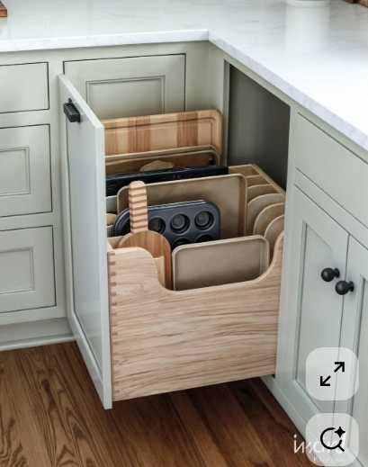
Daily fruit stays in a removable 13.2-inch bowl at the prep-side end of the main island. In the first food bay after the separate cleaning bay, two removable 16 W x 10 D x 5 H-inch open-slatted produce baskets sit on the 27.6-inch shelf; an 18 W x 10 D x 9 H-inch bread box sits on the 43.2-inch shelf above. These replace decorative contents, not cabinetry. Select food-safe, cleanable containers; the bread box has rear ventilation slots. Keep refrigerated fruit in the refrigerator and food separate from cleaning supplies and the opposite-end robot dock. See Prep shelves or Kitchen. Product selection and shelf loads remain unverified.
Kitchen sink facing the windows — reference example.
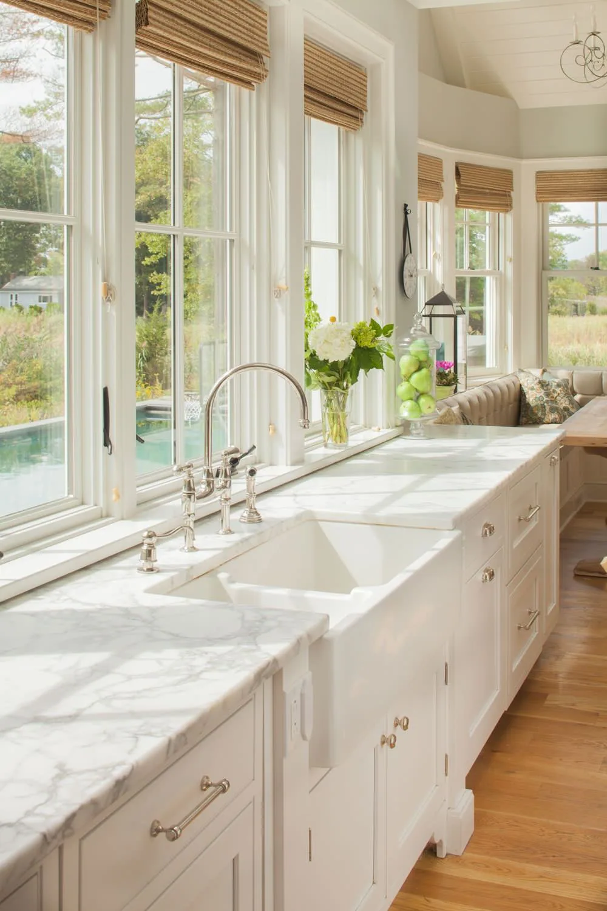
Pull-out trash + recycling cabinet — reference example.
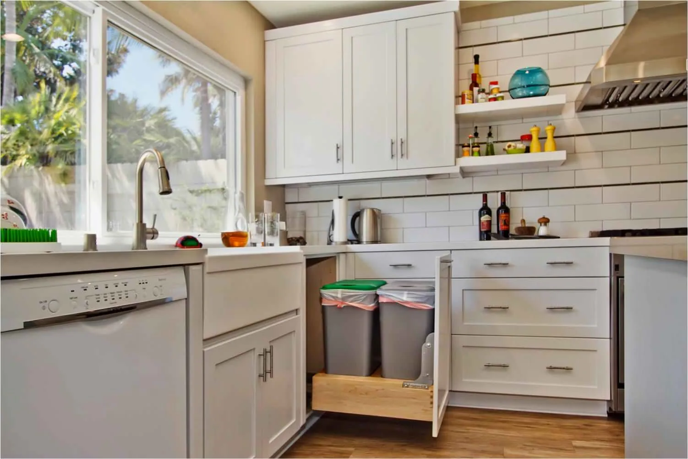
Under-sink pull-out storage for cleaning supplies — reference example.
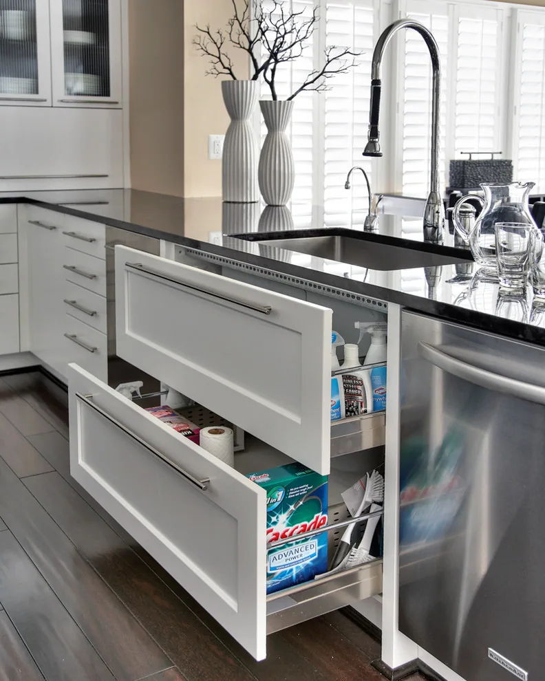
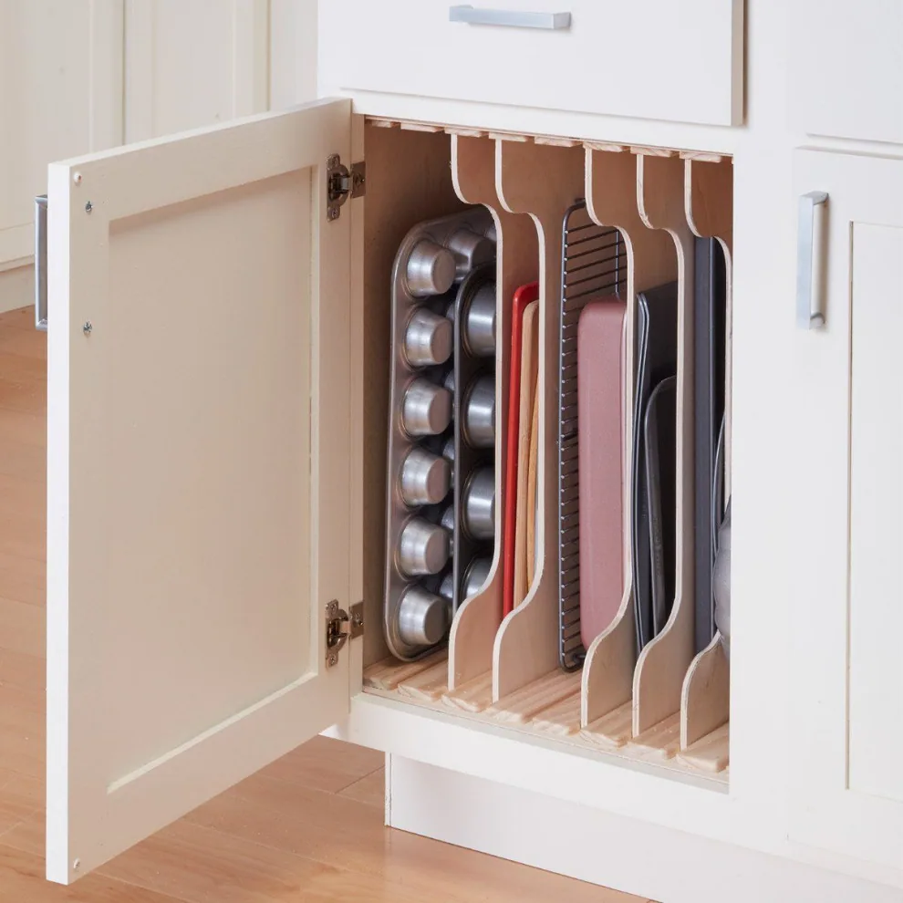
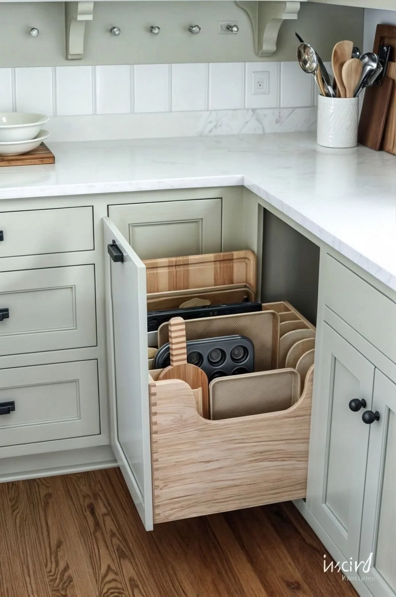
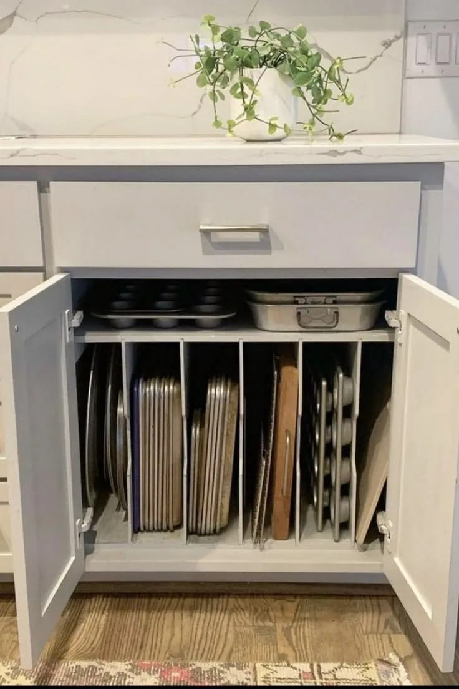
All cabinets throughout the home: light natural-stained white oak, Shaker doors and drawer fronts, frameless boxes with full-overlay fronts, and satin-gold handles. Apply to the kitchen perimeter, island, tall pantries, prep kitchen, mudroom cabinets, bathroom vanities, and other closed storage. Keep visible wood grain; confirm stain, sheen, and hardware on physical samples. Open shelving and appliance finishes remain unchanged.
Main-kitchen, island, and prep-extension drawers use Top Knobs M2223 Dakota Charlotte cup pulls in Honey Bronze: one centered pull, or a pair at the quarter points on drawers 30 inches or wider. The manufacturer specifies 3 3/4-inch overall length, 1 1/8-inch height, 15/16-inch projection, and 2 9/16-inch mounting centers. The preview simplifies the cup shape and finish. Keep bar pulls on doors, tall and trash pull-outs, and appliances; verify finish and drilling against a physical sample.
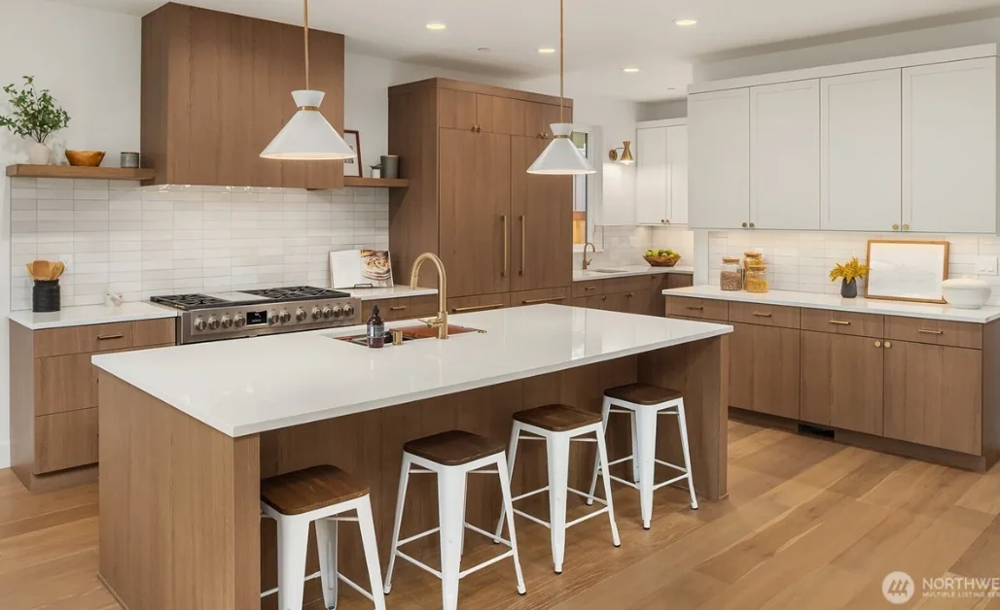
Love the island, lighter tone of wood.
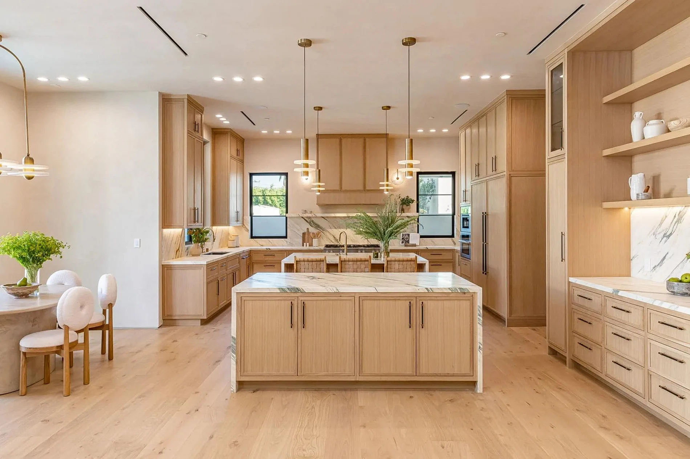
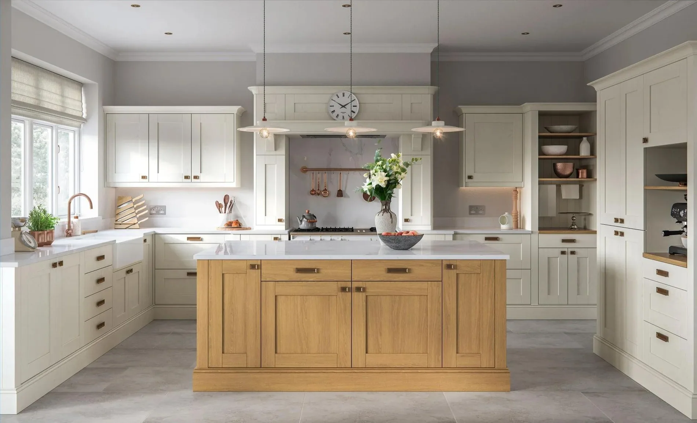
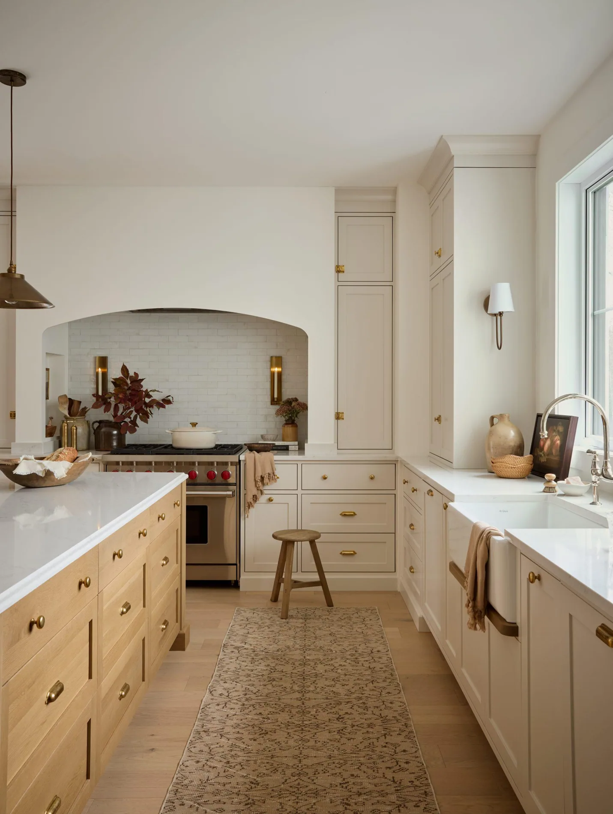
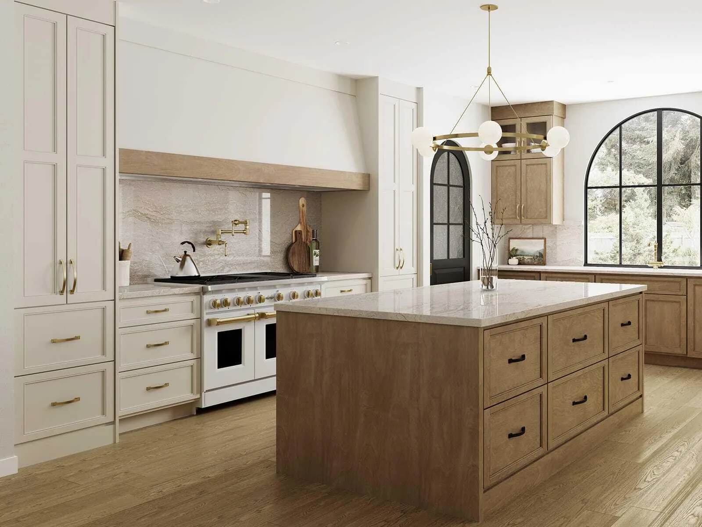
Current window product intent: main/prep banks and end window are White Fibrex Andersen 100 Series, no grilles, casement flankers and fixed pictures. Existing dimensions and nominal study codes are not approved SKUs or joined assemblies; confirm actual-frame/rough-opening sizes, kitchen 18-in flankers, prep 72-in nominal height, mulling, sink reach and safety glazing before ordering. See verified sources and ordering holds.